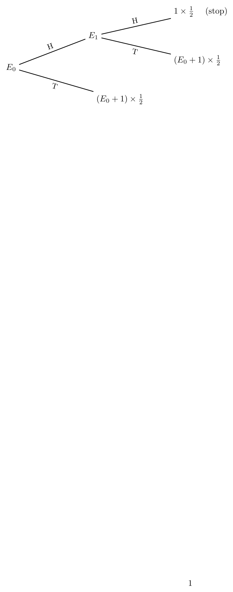
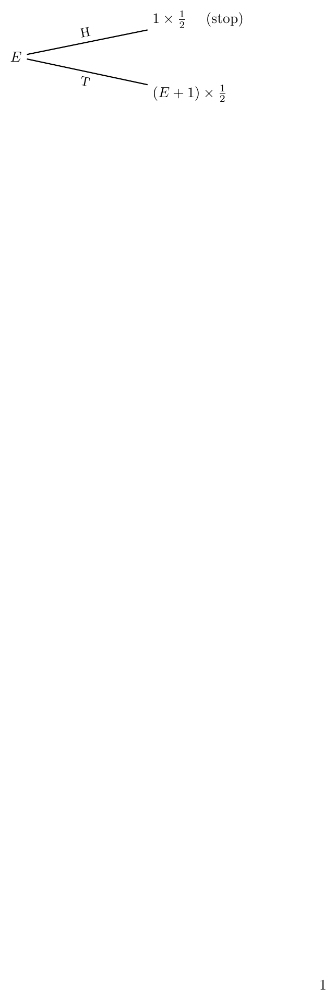
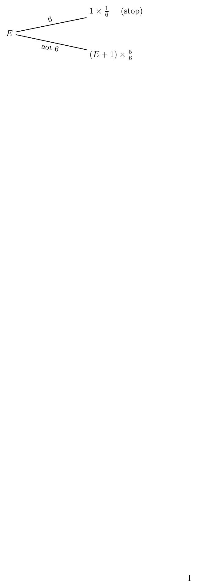
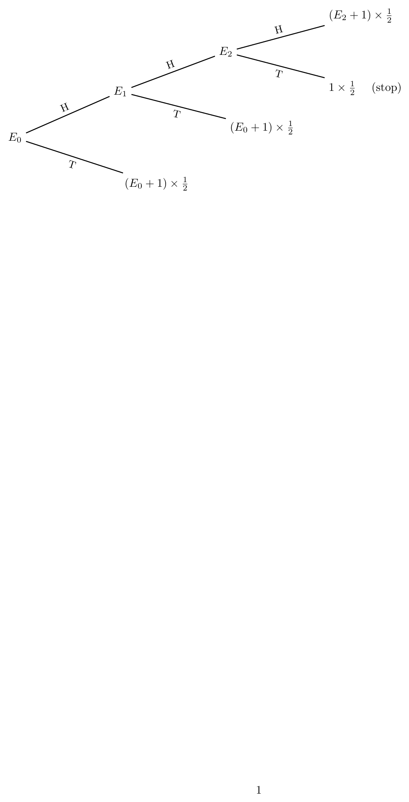
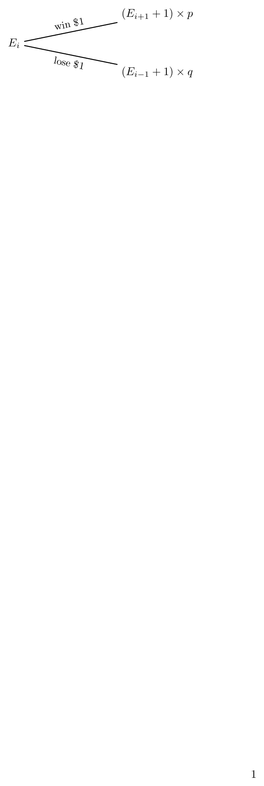

First-Step Analysis: Interview Questions and Answers¶
How to read the trees¶
\(E_s\) is the expected number of additional tosses from state \(s\). Each branch is one toss. A leaf shows
where the \(+1\) pays for the toss just made. A leaf that stops the game shows \(1\times\) probability. Adding the leaves gives the equation for the state.
Question 0: Expected Tosses Until HH¶
Question: A fair coin is tossed until two Heads appear in a row (HH). What is the expected number of tosses?

Answer:
Reading the leaves of the tree:
Put (1) into (2):
Question 1: Expected Tosses Until the First Head¶
Question: A fair coin is tossed repeatedly until the first Head appears. What is the expected number of tosses?

Answer:
Question 2: Expected Rolls Until the First 6¶
Question: A fair six-sided die is rolled until the first 6 appears. What is the expected number of rolls?

Answer:
Question 3: Expected Tosses Until HHT Appears¶
Question: A fair coin is tossed until the pattern HHT first appears. Find the expected number of tosses.
States: \(E_0\) = nothing matched, \(E_1\) = last toss H, \(E_2\) = last two tosses HH.

Note that from \(E_2\) another H leaves you in \(E_2\), since the last two tosses are still HH.
Answer:
Reading the leaves:
Substituting \(E_1\) gives \(E_0=4+\tfrac12E_0\), so
Question 4: Random Walk Intuition¶
Question: What is the main idea behind first-step analysis in random-walk problems?
Answer:
A random walk moves between states. The key observation is:
After taking the next step, the process is again in a state whose future behavior can be described by the same expectation equations.
The general form, with \(E=0\) at every stopping state, is:
Question 5: Gambler’s Ruin Intuition¶
Question: How does first-step analysis help in Gambler’s Ruin problems?

Answer:
Suppose a gambler currently has \(i\) dollars. If \(E_i\) denotes the expected time until ruin or victory from state \(i\), then reading the leaves,
Key Takeaway¶
Draw the tree, write each leaf as (new expectation \(+1\)) \(\times\) probability, and add the leaves.